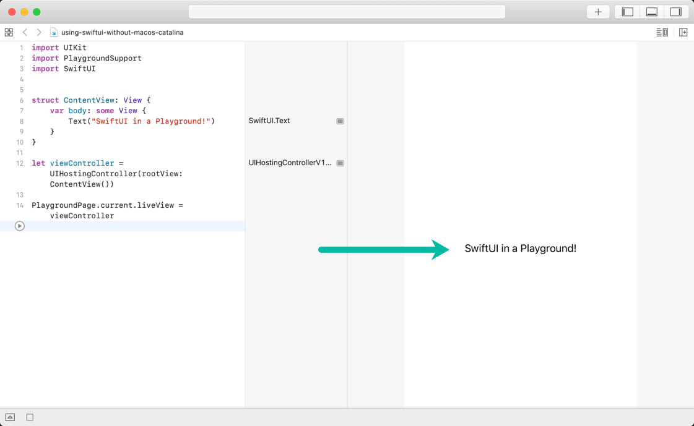

Using SwiftUI in a Playground
If you’re looking for a quicker way to iterate while you’re building SwiftUI views, and you don’t have macOS Catalina installed, you might enjoy the Playground experience more than you enjoy pressing command + R every time you make a change and want to see it in the user interface.
How do you do it? Here’s a code snippet to copy-paste into a Playground to get you going.
1import UIKit
2import PlaygroundSupport
3import SwiftUI
4
5// Make a SwiftUI view
6struct ContentView: View {
7 var body: some View {
8 Text("SwiftUI in a Playground!")
9 }
10}
11
12// Make a UIHostingController
13let viewController = UIHostingController(rootView: ContentView())
14
15// Assign it to the playground's liveView
16PlaygroundPage.current.liveView = viewController
17
18// RUN!